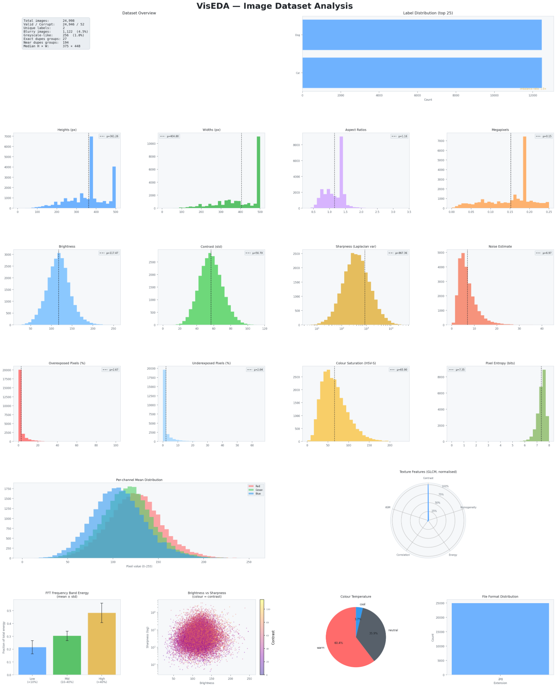
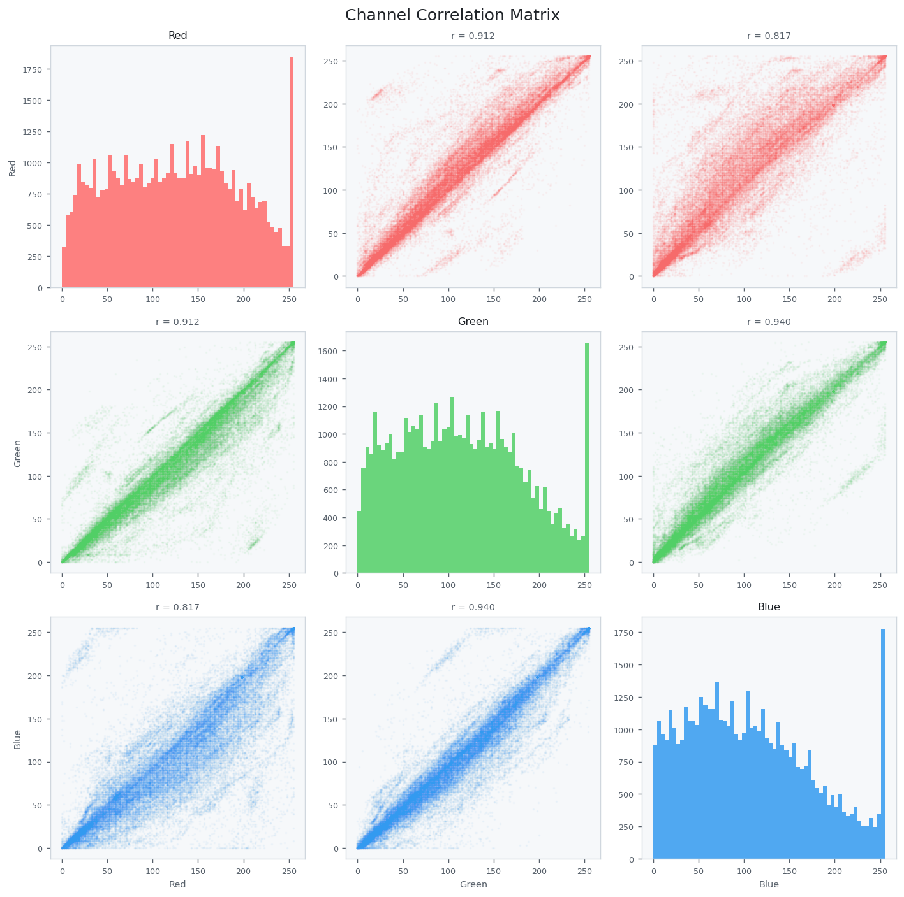
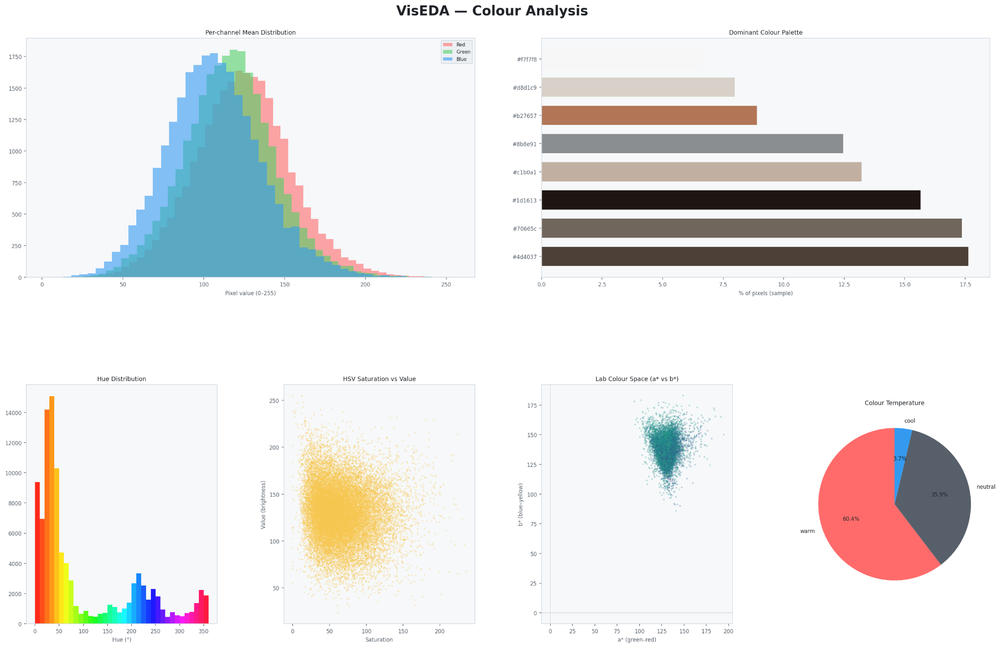
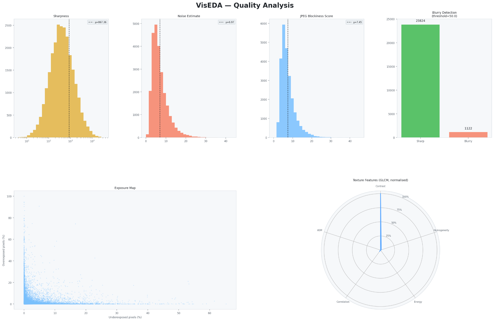
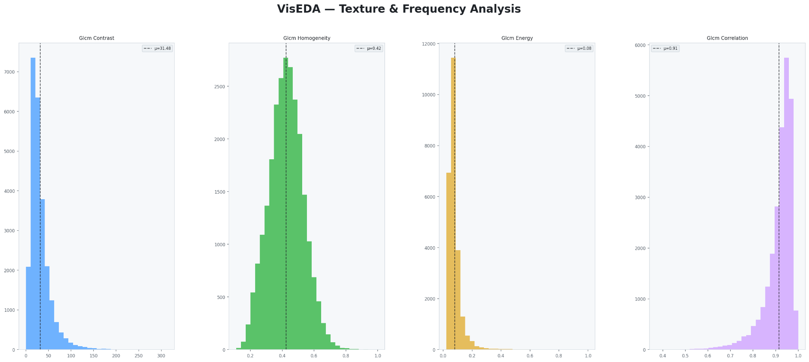

Full ImageEDA dashboard: Start here when auditing a dataset. The top panels show dataset size, valid/corrupt images, label distribution, and class balance. The middle panels show dimensions and image quality. The bottom panels summarize channel distributions, texture, frequency, brightness/sharpness, colour temperature, and file formats.

Channel correlation matrix: This checks the relationship between RGB channels. In natural image datasets, high channel correlation is normal. Very unusual patterns may suggest preprocessing mistakes, channel-order errors, or artificial colour effects.

Colour dashboard: This helps users understand colour bias. The dominant palette shows common colours. Hue distribution shows the colour spectrum. HSV saturation/value explains colour intensity and brightness. Lab space helps inspect perceptual colour separation.

Quality dashboard: Use this before model training to identify blurred, noisy, overexposed, underexposed, or compressed images. A high blur count may justify manual cleaning, stronger augmentation, or filtering.

Texture and frequency dashboard: Texture metrics summarize pixel-neighbour relationships. Frequency analysis explains how much of the image signal lies in smooth regions, mid-level structure, or fine details.